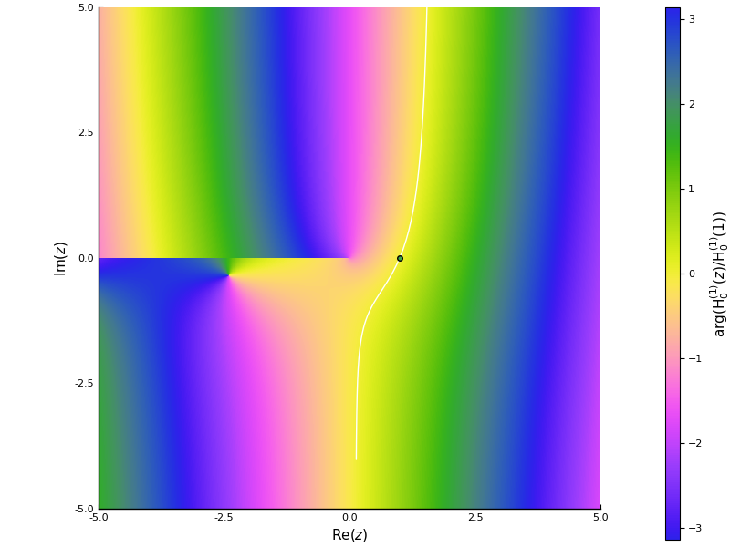
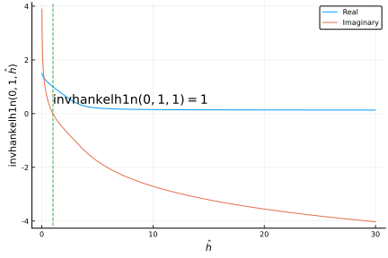
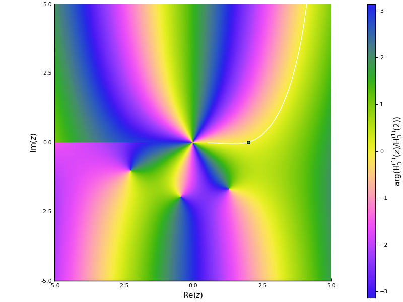
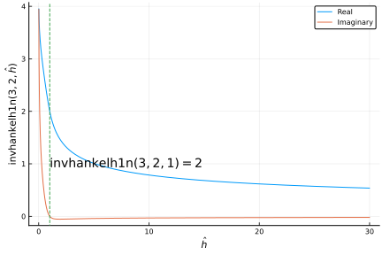

Normalised Hankel Function of First Kind and its Inverse
One of the ways to define a single valued inverse of the Hankel function is to consider the inverse around a specific known point (z₀). To do this, we first define the normalised Hankel function, that is
hankelh1n(ν, z₀, z) = hankelh1(ν, z) / hankelh1(ν, z₀)
See below for an example of this function plotted below (argument of function across complex domain) for ν = 0, z₀ = 1. 
In white, we have plotted the path which the inverse of the this function takes in complex space. The same function is plotted below, with the real and imaginary parts plotted against the argument of the inverse function.

We repeat these two plots for ν = 3, z₀ = 2. 

From Deakin (2020) we know that the inverse of the normalised Hankel function is single valued for all real positive z₀ and ν and 0 <= z <= 1. Also we know that hankelh1n(ν, z₀, z) → i∞ as z → 0